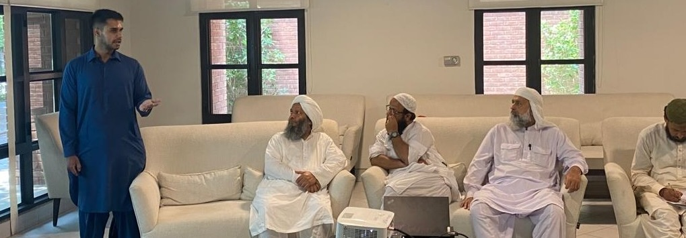

I explore the role of religious institutions in belief formation
by experimentally varying the content of Friday sermons —
one of the most widespread forms of in-person religious persuasion
in the Muslim world — in 309 mosques in Punjab, Pakistan.
Working with the Punjab Auqaf Department that administers state
religious properties, I randomize mosques to deliver sermons on
women’s rights, neighbors’ rights, or a control condition,
with additional variation in whether arguments are framed in
religious or secular terms. I find sizable impacts of women’s
rights sermons (0.23 SD) and neighbors’ rights sermons (0.19 SD)
on men’s beliefs and behavior as measured through lab-in-field
games, field behavioral measures, and survey responses 2–4 weeks
after treatments. I find suggestive evidence that effects extend
downstream, with wives of husbands who received sermons on women’s
rights reporting more prosocial beliefs. Examining equilibrium dynamics,
I document supply-side persistence in prosociality of sermon content
alongside demand-side backlash as evidenced by a 12% decline in
attendance numbers at mosques that received sermons on women’s
rights. Sermon content is more persuasive when grounded in religious
arguments for women’s rights but in secular arguments for
neighbors’ rights, consistent with a Bayesian framework modified
to allow conservative religious priors to constrain updating from
secular signals. Taken together, these findings highlight the continued
centrality of religious institutions, such as the Friday sermon, in
shaping beliefs and behavior especially among highly religious populations.
Low trust in secular state institutions can limit the
effectiveness of informational interventions among religious
populations. Recent work has suggested the potential for
religious leaders to be utilized for information
dissemination, but research directly comparing the efficacy
of religious with secular leaders is lacking. Moreover, what,
if any, are the unintended consequences of utilizing
religious leaders as frontline agents tasked with achieving
state goals? In this project, I explore the educational role
of local leaders and compare the ability of local religious and
secular leaders to encourage positive health behaviors in the
context of a state-sponsored handwashing campaign in Punjab,
Pakistan. In collaboration with the Pakistan Ministry of
Health, I randomize Pakistani couples to meetings with either
their local health worker or religious leader and then
evaluate changes in hand hygiene, handwashing behavior, and
beliefs about handwashing. Through lab-in-field games, I
explore the micro-foundations for separation of Church and
State by evaluating whether reliance on religious leaders for
information dissemination makes them the preferred choice for
information in the future, even on secular topics. In doing
so, this work sheds light on the benefits and pitfalls of
using religious leaders to achieve policy goals through
state-sponsored information campaigns.
The Market for Religious Content: Evidence from Friday Sermons in Pakistan
What drives religious content? In this project, I explore
this question from both the demand and supply side in the
context of mosques in Punjab, Pakistan. On the demand side, I
provide congregants with “content information”
(i.e. sermon content of nearby mosques) or “mosque
information” (i.e. amenities and congregation
characteristics of nearby mosques) and evaluate impacts on
mosque choice. On the supply side, I provide religious leaders
with “market information” (i.e. congregants’
preferences and sermon content of nearby mosques) or
“top-down information” (beliefs of senior
religious leaders) and look at endogenous changes to sermon
content. Results have implications for policymakers
seeking to understand the drivers of local hate speech and
polarization and ways in which increased information can
reduce the influence of controversial leaders.
Why Families Pay: Misperceptions and the Persistence of Dowry
with Abdullah Shahid
Dowry payments routinely amount to several times a
household’s annual income in many developing contexts,
pushing families into debt and inviting marital violence on
daughters. Existing work has largely neglected the role of
beliefs in helping explain the persistence of dowry, despite
how beliefs about what other households privately think of
the practice, the religious acceptability of dowry, and what
the payment buys a daughter, are crucial to the decision of
how much to give and may each be systematically skewed.
Working with a sample of households with soon-to-marry
daughters in rural Punjab, Pakistan, we document the extent
to which such misperceptions exist and whether information
correcting beliefs can shift dowry decisions. We document
misperceptions by comparing individuals’ beliefs to
ground truths constructed from surveys of the local
population, randomize households to a correction of each of
these three beliefs, and evaluate changes in realized dowry
payments. Results have implications for the optimal design of
anti-dowry policy.
The Value of Subordinates: Organizational Hierarchy and Mid-Level Career Progression
with Famy Xia
Learning by doing is an important element of learning on the
job. The existing literature has largely treated it as a
mechanical process — when experience increases, so does
human capital. We argue that not all experience teaches
equally. Learning by doing depends on the difficulty of what
is being done: time spent on solving easy problems does not
contribute to human capital growth, but time spent on solving
hard problems does. Workers in organizations do not decide
what problems they encounter. Rather, this depends on the
shape of the worker hierarchy which has consequences for the
human capital accumulation of workers inside each
organization. We propose a microfoundation where learning by
doing is a function of worker knowledge level and problem
difficulty, embedded in a knowledge hierarchy model where
subordinates handle problems they can solve and pass
difficult problems to managers. Learning is the byproduct of
solving problems above one’s competence threshold. The
model predicts that learning rates are determined by the
subordinate base, which determines how often hard problems
reach managers. We test this prediction with Revelio Labs
data and find that mid-level workers with a larger
subordinate base have higher promotion rates, robust to a
range of fixed effects and controls. The calibrated model
shows that the AI driven hierarchy flattening can lead to X%
of learning slowdown for middle managers.
Mapping out Property Rights and Informality in Indonesia
with Maisy Wong and Nina Harari
Harvard University
Ec 10B: Principles of Macroeconomics
for David Laibson and Jason Furman
Spring ’24, ’25, ’26
Ec 10A: Principles of Microeconomics
for David Laibson and Jason Furman
Fall ’23, ’25
Ec 1010A: Microeconomic Theory
for Maxim Boycko
Fall ’24
Dartmouth College
Econ 44: Topics in Development Economics
for Eric Edmonds
Winter ’19
Econ 49: Topics in International Economics
for Nina Pavcnik
Winter ’19
Scenes from fieldwork in Punjab, Pakistan.

Training session with imams ahead of the sermons experiment
· Punjab, Pakistan